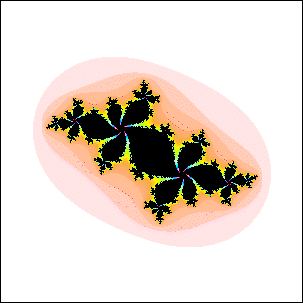
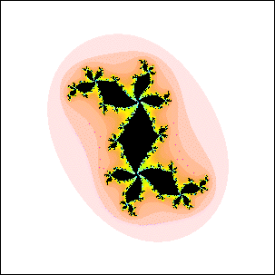
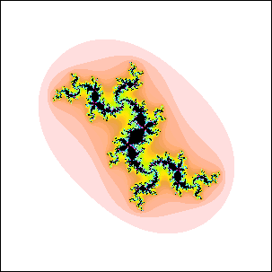

| 10. (a) At every branch point, 5 lobes meet. This Julia set could be for a point c in a disc attached to the main cardioid. |
| (b) At every branch point, 4 lobes meet. This Julia set could be for a point c in a disc attached to the main cardioid. |
| (c) At some branch points, 4 lobes meet; at others, 3 lobes meet. This Julia set could not be for a point c in a disc attached to the main cardioid. |
| (a)  |
| (b)  |
| (c)  |
Return to Homework 10 Practice.